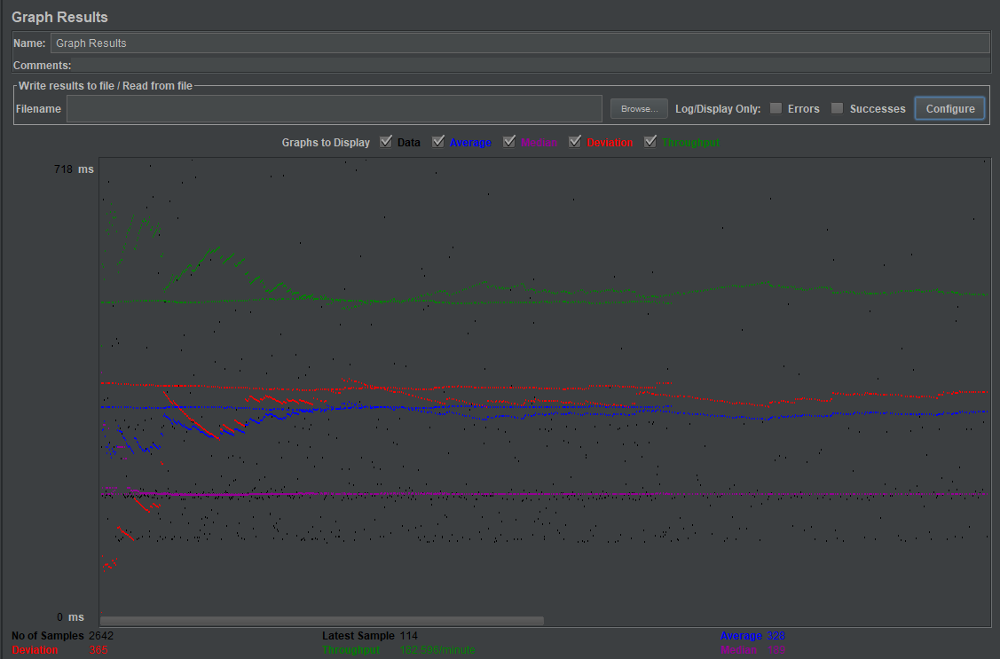
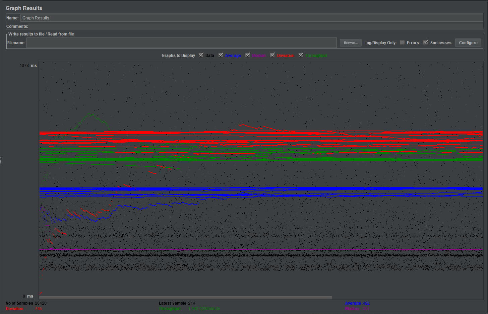
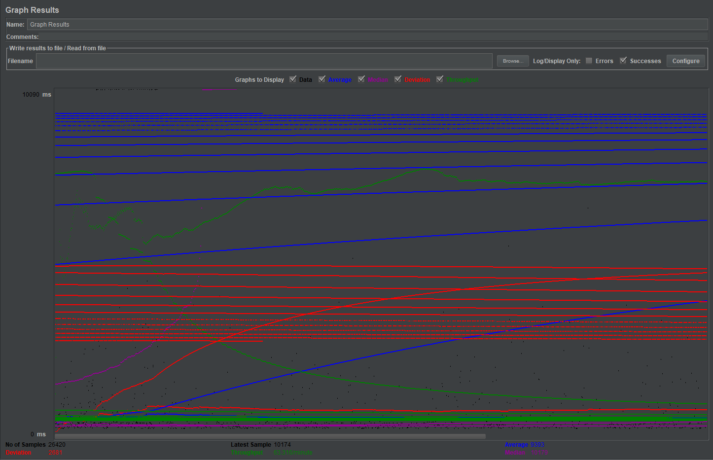
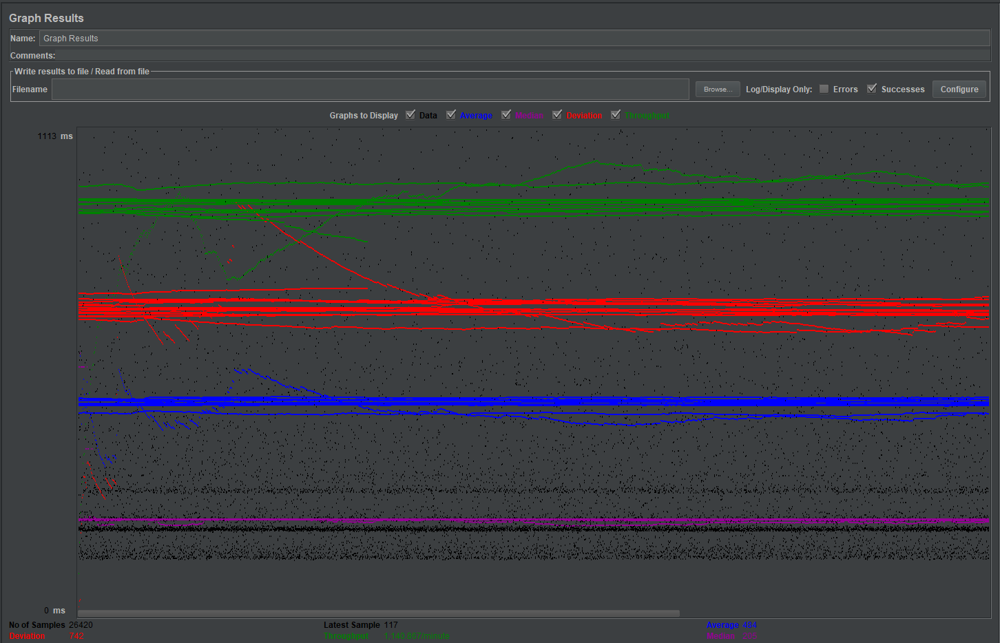

| Single-instance version cases |
Graph Results Screenshot |
Average Query Time(ms) |
Average Search Servlet Time(ms) |
Average JDBC Time(ms) |
Analysis |
| Case 1: HTTP/1 thread |
 |
352 |
187.26 |
2.12 |
This computation consisted of 1 thread (user) and using Connection pooling. The average times of this case came out as expected, where the average search time
came out as 187ms and the JDBC time as 2.12ms. The average query time came out to be 352, which was similar to the other connection pooling schemes. |
| Case 2: HTTP/10 threads |
 |
353 |
178.20 |
2.26 |
This computation ran with 10 thread (users) and used connection pooling. Again this computation even with 10 threads showed little to no difference from the
above averages. This is probably due to the fact that the queries were cached in connection pooling in this example and each call from the thread just used the
cache results/query. Thus realistically even with 10 threads it is actually running like it suppose to with 1 thread. |
| Case 3: HTTPS/10 threads |
 |
382 |
178.20 |
2.26 |
On this computation there was 10 threads (users) with connection pooling and also ran on HTTPS. The average times came out similar to the 10 threads on HTTP, there
should not be any major differences between these two internet protocols. |
| Case 4: HTTP/10 threads/No prepared statements |
 |
361 |
55.73 |
21.11 |
For this computation we used 10 threads (users) and no prepared statements. This time the average search servlet time significantly increased because the usage of
prepared statements happens in two steps, which is slower then the normal query statements. However, the average JDBC times went up significantly for this case
as well. The query is not cached this time so there is no reuse of the duplicate queries (movie titles) in our search. |
| Case 5: HTTP/10 threads/No connection pooling |
 |
573 |
268.67 |
2.53 |
This computation consisted of 10 threads (users) and no connection pooling. At a quick glance we see that there are big increases on the average query time and
average serach servlet time. This is because it does not reuse the connection pooling, and opens a new connection every query. Where as in the old compuations there
is connection pooling reusing the connections. |
| Scaled version cases |
Graph Results Screenshot |
Average Query Time(ms) |
Average Search Servlet Time(ms) |
Average JDBC Time(ms) |
Analysis |
| Case 1: HTTP/1 thread |
 |
328 |
171.590 |
2.099 |
This test consisted of a single thread using http along with connection pooling and prepared statements. The average query time, search servlet time, and jdbc times are all reasonable values. This gives us a baseline when considering the other cases. |
| Case 2: HTTP/10 threads |
 |
492 |
305.864 |
2.051 |
This test ran with 10 threads using http, connection pooling, and prepared statements. The main thing to note is that the response time (Tr) increased substantially relative to the other factors while the payload time(Tp) increased by only 30ms. This possibly indicates that the Search Servlet was having trouble keeping up with the requests of 10 threads. |
| Case 3: HTTP/10 threads/No prepared statements |
 |
9393 |
9187.616 |
2.142 |
This test ran with 10 threads without using prepared statements. This test shows a remarkable difference as the average Search Servlet time increased substantially to just under 10 seconds which is extremely large relative to the previous tests. Their was no significant increase in the average jdbc time which probably indicates that the code became significantly less efficient when not using prepared statements. This was unexpected as instead the average jdbc time should been the most significant difference due to prepared statements not being cached and prepared(in the database) before hand. |
| Case 4: HTTP/10 threads/No connection pooling |
 |
484 |
294.423 |
2.006 |
This test ran with 10 threads without using connection pooling. Looking at this there was no significant difference between this case and case 2 of the scaled versions. This is odd, as there should be an expected increase in the average Search Servlet time at least as the lack of connection pooling meant that there should be an increase in overhead maintaining and creating connections to the database for each individual user. |